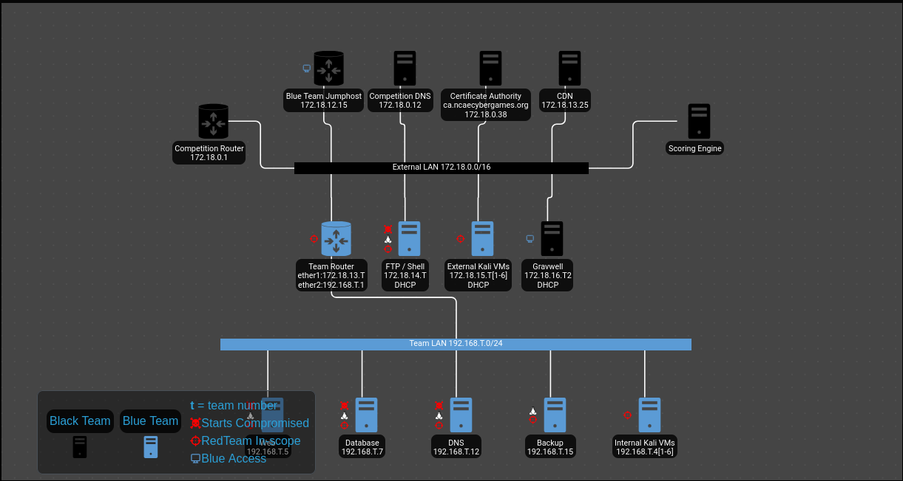

NCAE 2025
Table of Contents
1. NCAE Regionals and Nationals
The NCAE regionals have concluded, and the University of Florida (UF) Blue teams are gearing up for Nationals. Both teams have reached approximately 400 points, with one UF team preparing to participate in the NCAE Nationals.
2. Defending the Web Server and Apache Server
2.1. Pre-engagement
At 11:00 AM EST in the Northwest region, the UF NCAE team 2 gathered, and we began the day with laughter and joy. We divided the network into sections, and I was assigned the Ubuntu-based database with Postgres installed. This will be a fun experience for everyone sitting together.

Figure 1: Competition Topology
2.2. 11:00 - Engagement Begins
The flags have raised, and the starter pistol fired, signaling the start of the engagement. We logged in to our respective machines and began system hardening, preparing for the incoming attacks from the red team.
2.3. 11:02 - Time is Ticking
Time is already ticking, we log in, 2 minutes already gone. Someone doesn’t have their credentials properly set up, that will take atleast 5 mins for them. we don’t have enought time to stop. I keep going, trying to connect to webservices. The router is down, I can’t update my packages.
2.4. 11:05
Time flies away faster before the grace period ends, I find three user accounts with UID 0.
cat /etc/passwd | grep ":0:" root blackteam_r no_one
“noone” (get it? no one) should have root except me, we take their access away. sorry noone. we set their /bin/bash to /dev/null no one is getting access
2.5. 11:10
Time flows through sand, I am running out of time. I try to run IPTables. Bash error
iptables
Command 'iptables' not found
Firewall-d. Nothing UFW. Nothing. All firewalls compromised. I don’t have much time
sudo apt install iptables
Nothing printed, something is wrong. red team is getting closer.
2.6. 11:15
In an act of desperation I use canonicals SNAP package system and get UFW installed. UFW requires IPtables Plan backfired. but what about curl. https://netfilter.org/projects/iptables/downloads.html
curl -O https://netfilter.org/projects/iptables/files/iptables-1.8.11.tar.xz
you can download IPTables from the web.
iptables -A INPUT -p 5432 -j ACCEPT iptables -A OUTPUT -p 5432 -j ACCEPT iptables -A INPUT -j DROP iptables -A OUTPUT -j DROP
(Not all commands used listed)
2.7. 11:25
after running those system commands, attackers already got into my system. I need to ignore them for now, and get our services up. After starting postgres we Nmapped the system and realized something is wrong within, Nmap is returning “filtered”
- Config Files Postgres has Configuration files. something happened to them. we discovered it to have mismatched ports. fixed.
Now its time to stop attackers
2.8. 11:50
Working through the commands we discovered threat actor after threat actor
ss -tualn ss -tulpn tcpdump who -u ps -ejH
2.9. 12:30
For now my system was safe, There were active threats online, but as systems were running, they become ignored. Web is having trouble, an hour and 30 minutes have passed, and not even the web port is running.
2.10. 12:45
It took 15 minutes to find the error, a misconfiguration in the nginx server, where it was hogging the port, but couldn’t host the site.
2.11. 1:00
Another 15 minutes gone, yet another misconfiguration found in the router, port 80 isn’t forwarded.
2.12. By now everyone started their services
Defense is everything, IPTables installed on the webserver. Annoyance is best in the Postgres server for an hour and half we ran
import subprocess while(True): subprocess.pfork("wall 'I love Red Team <3'")
Till the end we continued to defend our system, till the end
2.13. 4:30
We lost all our systems except port 80, and the Router. Even with IPTables, both of my systems enacted were severely compromised, and the system keyboard, changed to german.
3. At the end of the day, we learned more about the keys of cyber security and team work.
11:05 - Discovery of UID 0 Accounts
I discovered three user accounts with UID 0.
org
cat /etc/passwd | grep ":0:" root blackteam_r no_one
The noone account should not have root access, but it did. We revoked their access and set their shell to /dev/null. 11:10 - Firewall Compromise
I tried to install IPTables, but it was not found.
iptables
Command 'iptables' not found
I attempted to use UFW and Firewall-D, but both were compromised. I eventually used the Canonical SNAP package system to install UFW. 11:15 - Desperation Sets In
I downloaded IPTables from the web and installed it.
org
curl -O https://netfilter.org/projects/iptables/downloads.html
I then configured IPTables to allow incoming traffic on port 5432 and drop all other incoming traffic.
org
iptables -A INPUT -p 5432 -j ACCEPT iptables -A OUTPUT -p 5432 -j ACCEPT iptables -A INPUT -j DROP iptables -A OUTPUT -j DROP
11:25 - Attackers Gain Access
Despite my efforts, attackers had already gained access to my system. I focused on getting our services up and running. 11:50 - Identifying Threat Actors
I used various commands to identify and eliminate threat actors.
org
ss -tualn ss -tulpn tcpdump who -u ps -ejH
12:30 - Systems Running Smoothly
For a while, my system was safe, and the threats were being ignored. 12:45 - Web Server Issues
We encountered issues with the web server, which took 15 minutes to resolve due to a misconfiguration in the nginx server. 1:00 - Router Issues
Another 15 minutes were lost due to a misconfiguration in the router, which prevented port 80 from being forwarded. 4:30 - Systems Compromised
We lost all our systems except for port 80 and the router. Our systems were severely compromised, and the keyboard was changed to German. Conclusion
At the end of the day, we learned valuable lessons about cybersecurity and teamwork.